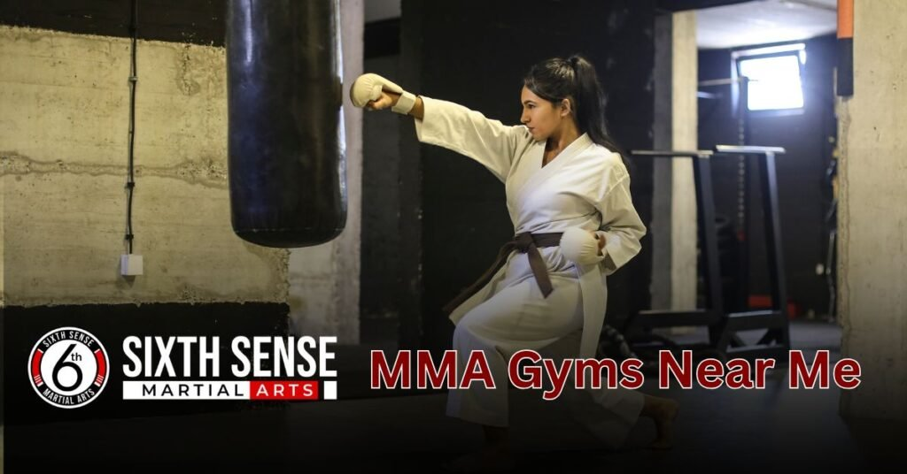
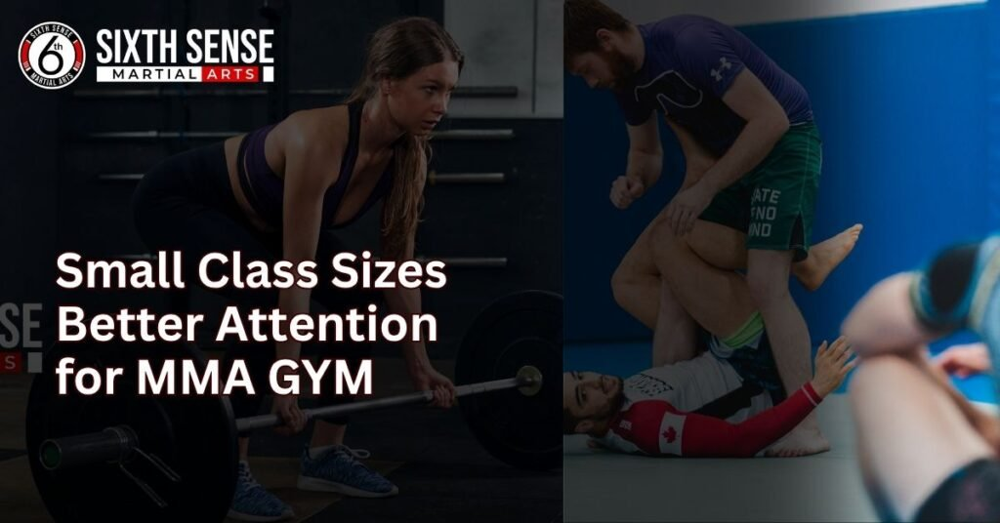
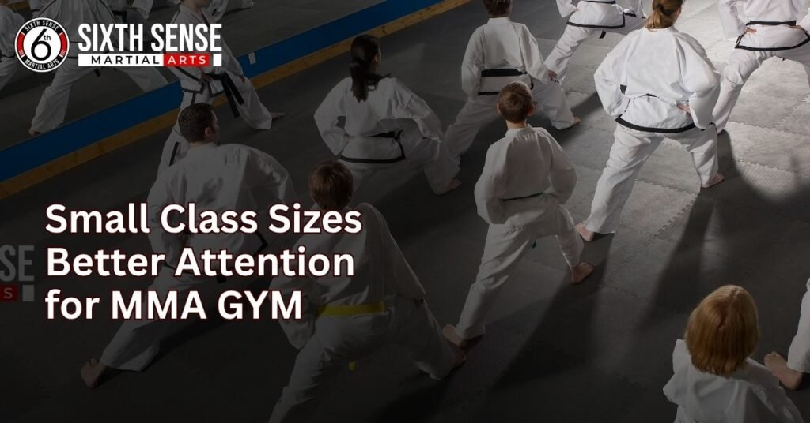

MMA Gyms Near me Giving free Trials and Real results

MMA gyms near me it’s more than a search; it’s the first step toward finding a place that actually fits you. Choosing the right gym shouldn’t feel overwhelming, especially when your goal is to grow stronger, stay consistent, and build real skills in martial arts. What truly matters isn’t flashy ads or bold claims it’s about walking into a gym that feels right, supports your goals, and makes you feel welcome from day one.
While many options can seem alike at first, it’s not easy to know what you’re really getting out of a membership until you’ve had the experience. That’s why when you search for an MMA gym, think about the mats, the people, and how it grows your mindset not just the price or location. You have the power to shape your future, and choosing a gym that fits with your lifestyle is where the real journey begins.
What Does “MMA Gyms Near Me” Really Mean?
MMA gyms near me isn’t just a map search it’s someone asking for a place to belong, train, and grow. It’s personal, often made by those ready to take their health, confidence, or fighting skills seriously.
Whether it’s a complete beginner or someone with years of experience, the search usually carries the same feeling: I want to start, but I want the right place.
This search isn’t just about geography. It’s about finding a space that feels right where the vibe fits, where the people are genuine, and where real progress happens.
Looking for MMA Gyms Near Me? SixthSense MMA Has You Covered
When you search for an MMA gym near me, it’s easy to get overwhelmed by flashy ads, bold promises, and social bars showing off highlight reels but that’s not what truly sets a gym apart. At SixthSense, we don’t just talk, we show results through real training, solid coaching, and an environment that actually welcomes you.
Whether you’re starting from scratch or already at a higher level, our class structure is built to match your goals, pace, and the effort you’re ready to put in.
This is a place where your fight game can grow, where respect matters, and where the people around you do more than just train they focus with energy and help you rise. You’re not alone, and the right support is already near. We’d be proud to help you find exactly what you need.
Gym That Trains Beginners, Pros, and Everyone in Between
MMA gyms near me Building confidence starts with taking that first step, whether you’re chasing fitness, learning self-defense, or aiming for competition. The right coaches will guide you, not just train you, helping you grow your skills through hands-on experience.
At every level, well-structured classes ensure you improve with purpose learning how to punch, move, and get in shape the right way. What sets this journey apart is the care shown at every stage, creating a path that adapts to your goals. If you’re serious about MMA, this is where your fight begins the right way.
Real Coaching from Experienced Fighters Not Just Fitness Trainers
Real progress in MMA doesn’t come from someone who simply reads a textbook it comes from coaching grounded in experience, taught by fighters who’ve stepped into the ring themselves. The instructors here don’t yell instructions from across the room .
They train beside you, offering sharp feedback, clear instruction, and practical routines designed to help you improve with every session. At SixthSense, you’re not treated like just another client you’re guided like a fighter in the making.
Flexible Class Schedules for Real World Lives
Training in MMA shouldn’t mean putting your life, work, or family on hold. Whether your mornings are packed with school, your evenings are full of stress, or your weekends are your only break, the right gym will offer class times that match your schedule.
That’s why being consistent gets easier when you have options throughout the week that fit around your routine not the other way around. At home or in the gym, staying active makes you stronger, and if you’re a riser with a busy lifestyle, you need a space that understands and shows up when you can.
Why Choosing the Right MMA Gyms Near Isn’t Just About Location
The closest gym might offer convenience, but that doesn’t mean it’s the place where you’ll truly grow. You should pick a space that supports your pace, fits your style, and feels like home not just somewhere that happens to be near.
The right environment and culture can make a huge difference in your day-to-day motivation and energy. A solid coaching structure, a welcoming team, and an environment where you feel valued that’s what actually matches your goals.
It’s not about just showing up, it’s about finding a path that works for you, where your effort leads to real growth, and where your work means something more than sweat on the mat.
Common Mistakes People Make When Choosing an MMA Gym
1. Choosing based on proximity or price only
Just because a gym is near or affordable doesn’t mean it fits your needs. The right gym should also offer strong support, quality coaching, and a good learning vibe.
2. Overlooking the gym’s culture and vibe
Many people overlook the style or environment, which can feel intimidating if not beginner-friendly. A friendly space with helpful coaches makes a big difference.
3. Not checking the coach’s background and attitude
Some professionals may have fought at the top, but that doesn’t always make them good teachers. The best coaches are those who teach with patience and don’t let ego get in the way.
4. Skipping the trial class
A trial is your chance to feel out the class structure, teaching style, and people. Skipping this step is a mistake, especially if you’re unsure whether the gym is the right fit.
5. Ignoring your learning style and pace
Every student is different. A class that doesn’t align with your learning style or is too fast-paced can hold you back from making real progress.
Sixth Sense MMA Where Expertise Meets Real Community
There’s something different you feel the moment you walk onto the mats a sense that this is more than just training, it’s a community. At Sixth Sense, we don’t just teach techniques, we train people to grow, to compete, to build self defense, and to become a real part of something that feels like home.
Our coaching balances respect and hard effort, with zero ego, giving both beginners and advanced athletes the support they need. What sets us apart is the energy our coaches bring and the way we back your journey with purpose from your first step to your greatest growth.
Why Hyper Local Training Environments Matter

1. A local gym brings comfort and connection
When the gym is close to your lifestyle, it gives a natural sense of comfort. You don’t have to travel far, and the space starts to feel like home somewhere you truly belong.
2. Consistency becomes easier
Being near your training spot helps you stay consistent, making it easier to build strong habits and stick to your routine even on low-energy days.
3. You’re part of a real community
In a hyper-local gym like Sixth Sense, you’re not just another face. The team knows your goals, supports your motivation, and treats you like someone they care about.
4. Builds accountability and commitment
Training locally adds real accountability. When they see you regularly, they know when you’re missing and help you stay on trackwhich naturally grows your commitment.
5. Grounded support you can count on
You train with people from your area who understand your routine and rhythm. That ground-level connection helps you stay focused and feel truly connected to your fitness journey.
Pricing and Membership Options That Fit Your Life
At SixthSense, we’ve built membership options that actually fit your lifestyle and budget without the hidden fees or pushy sales tactics. We understand that every person’s training path is different, which is why our plans are flexible and fair, designed to support steady progress and long term commitment.
When you’re exploring martial arts, the quality of coaching should matter more than gimmicks, and we make sure what you get works for you. Our pricing reflects the real value of the training you’ll receive nothing more, nothing less.
Trial Classes Are Free Try Before You Commit
Step onto the mat and feel the energy, the coaching, and the community for yourself—before any commitment. Our free trial classes let you experience the vibe, meet the coaches, and see if it’s the right fit for your day-to-day life, with no strings attached.
It’s your chance to decide with confidence, not pressure, and truly understand how our training flows with your goals.
No Long Term Contracts Just Consistent Growth
Progress in MMA takes time, not pressure from a long term contract. That’s why SixthSense offers flexible plans that let you stay focused on your training and growth without feeling stuck.
Whether your goal is short term skill building or long-term development, our month to month flexibility gives you the freedom to train at your own pace, while still seeing real results over time.
Discounts for Students, Families & First Responders
At SixthSense, we’re proud to give back to those who serve and support. Whether you’re a college student, a parent with children, or one of our first responders on the front lines, we offer a special plan that respects your role and protects your wallet.
We believe families should train together, students should stay active on a budget, and those who serve deserve our full respect both on and off the mats.
Why Sixth Sense Mixed Martial Arts Is the Best Option for You
At SixthSense, your goals whether it’s fitness, self-defense, or becoming a strong competitor—are our top priority. We don’t just train students; we support each one like they matter, and we treat every student with the respect and structure they need to grow.
This is a gym built on real discipline, not ego, where experience meets personal care. If you want a place to build skill, sharpen mindset, and take your MMA journey seriously this is where you start.
Personalized Coaching Styles Tailored to Your Goals
Your journey in MMA is unique, and our coaching is built to match that. Whether your goal is to compete, build confidence, sharpen your self defense, or simply stay in shape, our coaches deliver hands on, focused guidance using structured routines and conditioning that improve movement, skills, and strategy.
Small Class Sizes Better Attention & Real Progress

In every session, we keep classes small so each student gets the attention, corrections, and feedback needed for real improvement. We work at a pace that fits your form and pacing, not the group average. You’ll stick with your training because you’ll see progress and feel supported around motivated students who are here to grow just like you.
Clean, Professional Facilities with the Energy of a Fight Camp
The vibe you walk into matters whether it’s early morning or late at night, our gym is organized, clean, and fully equipped with professional gear and structure.
It’s a respectful space with the raw energy of a real fight camp, not just a place to sweat. We’ve built an environment where students and fighters train side by side in a safe, focused atmosphere that brings out your best.
What Our Fighters Say Real Reviews from Sixth Sense Members
At SixthSense MMA, our biggest strength isn’t just the training it’s the people. From first-time beginners to experienced fighters and parents of young students, our members are the heart of our gym. Their stories show what happens when the right support, coaching, and community come together.
Here’s what some of them had to say, in their own words.
Stories from Beginners Who Gained Confidence
“I had zero experience and was honestly nervous to even walk in the door. But the coaches made me feel welcome from day one. I’ve gained so much confidence — not just in MMA, but in myself.”
jansen J., 27
“ The progress I’ve made here is something I never thought possible.”
danial M., 32
“This gym doesn’t care if you’ve never trained before. They help you every step of the way. I feel stronger, both mentally and physically.”
Nival A., 24
Testimonials from Fighters Preparing for Competition
“SixthSense isn’t just a training gym it’s where I’ve prepped for every fight over the past year. The attention to detail from the coaches is on another level.”
Omar R., Amateur MMA Fighter
“What I love is how they push you hard but also make sure you’re improving the right way. My conditioning, technique, and mindset have all leveled up.”
Leo C., Competitive Muay Thai Athlete
“They actually care about your progress. I’ve trained at other places, but here it feels like I’m part of a real team.”
kalin ssan K., Jiu-Jitsu Competitor
Parents Love Our Kids’ MMA Programs
“My son used to be shy and nervous around others. After just a few months at SixthSense, he’s more confident, disciplined, and excited to go every week.”
Maria S., Parent
“The kids’ classes are well-structured and fun. The coaches are great at working with children and teaching them respect and self-defense.”
Bilal A., Parent
“We were looking for something to help our daughter with focus and energy — this was perfect. She’s learning valuable skills while having fun.”
Sameena K., Parent
Talk to a Coach or Book a Free MMA Trial Today
Come see the difference for yourself book a free trial class today and get a real feel for how our MMA training works. Whether you’re just starting or already at a solid skill level, we’ll match you with the right coach and schedule that fits your goals.
Ther e’s zero pressure, just a chance to experience the vibe, structure, and support that other gyms don’t always offer. When you search for MMA gyms near you, let our approach speak firsthand we’re here to help, not sell.
Conclusion
Your journey in MMA gyms near me isn’t just about throwing on a glove it’s about growth, confidence, and finding a place that truly feels like home. At SixthSense, we make sure every class is taught with respect, every coach brings real experience, and the structure supports you no matter where you’re headed. There’s no hard pitch, no strict contract just a thoughtful, flexible training structure that helps build comfort, spirit, and a sense of community.
This is the gym where you’re treated with care, where your mind and body can grow in quiet strength, and where the difference between just going through motions and becoming a fighter truly shows. When you’ve searched for a local spot that actually gets you, this is the one that starts to feel right based on more than distance. Because it’s not about hype it’s about how you feel in the space, the connection you build, and the way it all comes together with sense and purpose.
FAQ's
Classes are structured with scalable drills and modifications, allowing beginners to focus on foundational skills while advanced students tackle tougher challenges, all with individualized coaching.
The women’s-only program follows the same technical curriculum as co-ed classes but includes a focus on self-defense scenarios specific to women, in a private, less intimidating environment.
Coaches track progress, identify specific areas for improvement, and introduce new challenges to push students past sticking points, ensuring continuous development.
We cultivate a no-ego environment where members support each other’s growth through regular social events, open mat sessions, and mentorship opportunities that build genuine connections.
We offer flexible morning, evening, and weekend classes, allowing students to mix martial arts styles and train consistently despite busy work or family commitments.
Train with us in Coppell
The first class is free. Shorts, a t-shirt and a water bottle. We lend the rest.
Book a free class